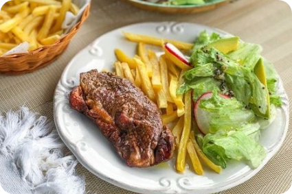

Steak Tahu
Menengah 35 Menit
Bahan-bahan
- 2 potong tahu, hancurkan
- 1 siung bawang merah, haluskan
- 1 siung bawang putih, haluskan
- ¼ sdt pala bubuk
- ¼ sdt garam
- 1 butir telur
- ½ sdt gula
- 1 ons tepung roti
- Minyak goreng
Saus Steak Tahu
- 1 sdt arak masak
- 1 sdm mayones
- Sedikit lada
- ½ sdt gula
- 100 ml air
Pelengkap
- Kentang goreng
- Buncis dan wortel kukus
Cara Membuat
- Campur tahu, bawang merah, bawang putih, pala, dan garam. Aduklah sampai merata.
- Bentuk adonan tahu menjadi bundar pipih seperti bistik.
- Celupkan adonan tahu ke telur dan gula yang sudah dikocok bersama, lalu gulingkan di tepung roti.
- Goreng adonan tahu sampai kecokelatan. Angkat dan tiriskan. Sisihkan.
- Untuk membuat saus, panaskan panci, lalu masukkan arak.
- Tambahkan mayones, lada, gula, dan air secukupnya. Masak hingga mendidih. Angkat.
- Sajikan bersama kukusan sayur dan kentang goreng sebagai pelengkap.
|